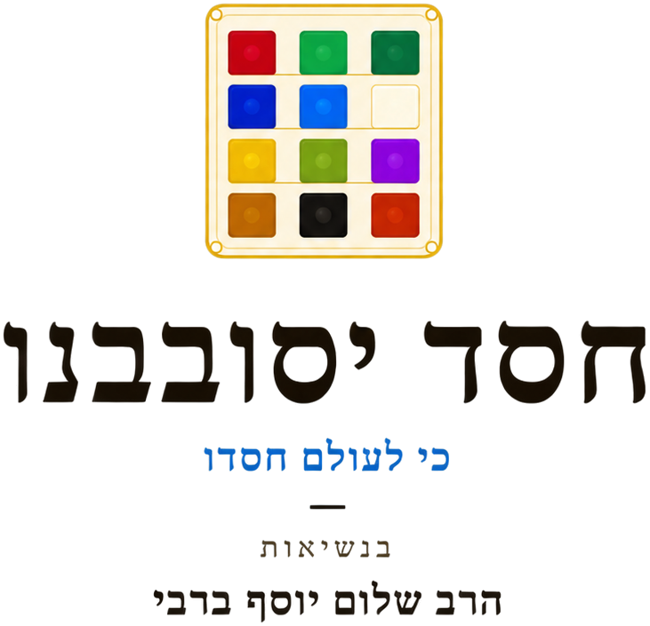

תחת הנהגתו המסורה של הרב שלום יוסף ברבי, פועל ארגון חסד יסובבנו כבר למעלה מ-15 שנה לטובת קהילות ישראל — מנתיבות ומעבר לה.
הרב ברבי הקים את הארגון מתוך אהבת ישראל עמוקה ומתוך ראיית הצורך הגדול בסיוע אמיתי, רגיש ואנושי לאנשים הנמצאים במצוקה. מאז ועד היום, חסד יסובבנו הפך לבית חם עבור אלפי משפחות.
הארגון פועל בשבעה עמודי תווך: קיום בכבוד, ריפוי הנפש, ביצור הבית היהודי, תמיכה במצבי חולי, השקעה בדור העתיד, הוקרה ללוחמים, וקול התורה.